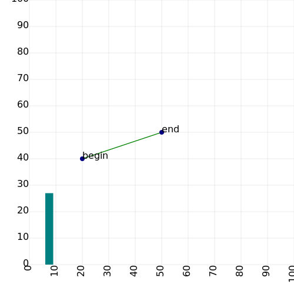

Using Neural Nets
Instructions:
- Write some code to detect convergence with your neural network.
Divide the training data into two portions, called "training" and "validation".
Train using only the samples in the training portion of the data in random order without visiting any of them twice.
After every k epochs of training, measure the sum-squared-error against the validation portion of the data.
If the error does not improve by at least j percent over a window of k training epochs, then convergence is detected and training is done.
You should be able to adjust the values of j and k to your liking.
- Add support for batch and mini-batch gradient descent training.
That is, update the gradient with all of the patterns in the mini-batch before applying it to the weights.
- Add support for momentum to your neural network.
That is, before you call updateGradient, instead of filling the gradient vector with zeros, just scale it by the momentum term.
Use the equation, "m0+m1+m2+m3... = 1/(1-m)" to compute an "effective mini-batch size",
and provide a mechanism for users to set the momentum term based on the desired effective mini-batch size.
- Download this code for C++ or Java.
It provides implementations of a few different operations for preprocessing data.
Study the code until you understand it (or ask questions).
- Train your neural network using this data: hypothyroid.arff.
- Next, let's explore the concept of overfit.
Measure root-mean-squared-error against both training and validation data at regular intervals during training.
Make a line plot (with two curves) showing the progress of your neural network over time.
Be sure to label both axes and both curves on your chart!
The horizontal axis should be the number of training pattern presentations.
The vertical axis should be RMSE.
The accuracy with training data should steadily improve.
The accuracy with the validation data should improve at first, then get slightly worse as the neural network begins to overfit the training portion.
(Note where convergence is detected on your chart, but Keep training for several more epochs to make the chart more interesting.)
For an example of approximately what this chart is supposed to look like, see Section 4.3.6.2 in the book.
(Since this is a different dataset, however, it will probably have somewhat different properties.)
Some ways to make a chart
If you prefer to just pass the salt:
- Insert some print statements into your code to output some comma-separated values.
- Run your program, and pipe the output to a file.
- Import this data into your favorite spreadsheet program.
- Manually use the GUI interface of your spreadsheet program to generate a chart.
- Take a screen shot.
- Reopen it in your favorite painting program.
- Manually label the axes and the curves.
If you prefer fully-automated general solutions:
- Write a class for generating SVG output, or link to some existing library that does it.
Here is a simple C++ class I wrote for generating SVG output: svg.h, svg.cpp.
Sorry, I have not yet translated this to Java, but you are welcome to do that if you want to.
- Write your code to generate an SVG chart. (Here is an example snip of code for using my SVG class, and the plot it generates.)
GSVG svg(500, 500, 0, 0, 100, 100);
svg.horizMarks(10);
svg.vertMarks(10);
svg.line(20, 40, 50, 50, 1, 0x008000);
svg.dot(20, 40, 1, 0x000080);
svg.text(20, 40, "begin");
svg.dot(50, 50, 1, 0x000080);
svg.text(50, 50, "end");
svg.rect(6, 0, 3, 27, 0x008080);
std::ofstream s;
s.exceptions(std::ios::badbit);
s.open("myplot.svg", std::ios::binary);
svg.print(s);

(Note that SVG images are just text files.
You can see the source of this image by right-clicking on it->View Image->View Page Source.)
- If you don't want to write code to label the axes or curves, you can manually open the SVG file in Inkscape (or your favorite SVG editor) to touch it up.
Warning: If you use SVG format, make sure to plot a line-segment every n iterations, where n>1, or else your plot file may become humongous!
- Let's also compare momentum against minibatches.
Train again with the same data.
This time, put wall-clock time (rather than training epochs) on the horizontal axis.
The vertical axis should still be RMSE.
Train using momentum. (You may pick the momentum term.)
Also train using minibatches. (You may select the minibatch size.)
Make a second chart.
- Zip (or tar) up your code. Include the two charts you made in the archive, and submit it in the usual manner.
F.A.Q.
- How does one do an epoch of training?
One "epoch" of training involves presenting each training pattern in random order.
A good way to do this is to generate
a list of training pattern row indexes,
m_pIndexes = new size_t[train_features.rows()];
size_t* pInd = m_pIndexes;
for(size_t i = 0; i < length; i++)
*(pInd++) = i;
and shuffle it at the start of each training epoch:
for(size_t i = train_features.rows(); i > 1; i--)
std::swap(m_pIndexes[i - 1], m_pIndexes[m_rand.next(i)]);
- How does one measure time?
Here's a C++ function that returns the number of seconds since some event with at least milisecond precision:
#ifdef WINDOWS
# include <windows.h>
#else
# include <sys/time.h>
#endif
double seconds()
{
#ifdef WINDOWS
return (double)GetTickCount() * 1e-3;
#else
struct timeval tp;
gettimeofday(&tp, NULL);
return ((double)tp.tv_sec + (double)tp.tv_usec * 1e-6);
#endif
}
In Java, you can do:
double seconds = (double)System.nanotime() * 1e9;
- My SVG lines exhibit streakey spikes that extend outward from the points I connected. Why?
I think this is an artifact of how Firefox renders SVG files.
If it makes your graph difficult to read, try plotting at less-frequent intervals.
|